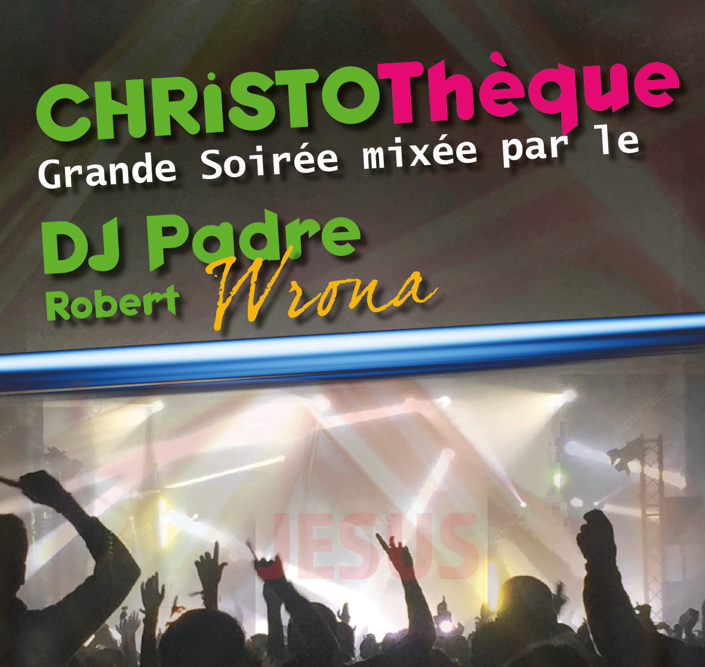

Un évenement
immanquable
Billetterie Christothèque
Menu
Qui sommes nous ?
Une Christothèque c'est quoi ?
Une journée de formation
Mont'Thabor à Gagnières
Mont'Thabor qu'est ce que c'est ?
Mont'Thabor en Christothèque
Vous avez dit intercession ?
Des questions ? Nous contacter
Billetterie Christothèque